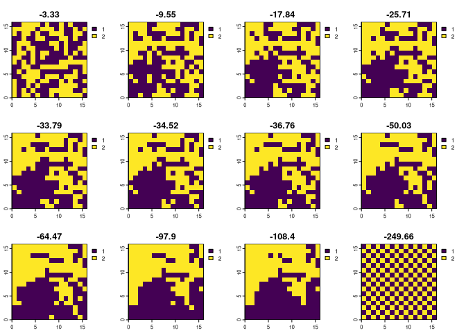

The goal of bespatial is to calculate several entropy metrics for spatial data inspired by Boltzmann’s entropy formula. It includes metrics introduced by Cushman for landscape mosaics (Cushman (2015)), landscape gradients and point patterns (Cushman (2021)); by Zhao and Zhang for landscape mosaics (2019); and by Gao et al. for landscape gradients (2017, 2019).
Installation
You can install the released version of bespatial from CRAN with:
install.packages("bespatial")You can install the development version from GitHub with:
install.packages("bespatial", repos = "https://nowosad.r-universe.dev")Example
Let’s start by attaching relevant packages and reading example data mosaic. This dataset contains 12 raster layers, where each has an equal number of cells with values 1 and 2 (identical compositions), but they are differently arranged in space (different configurations).
library(terra)
library(bespatial)
mosaic = rast(system.file("raster/mosaic.tif", package = "bespatial"))Now, we can calculate a selected metric, for example, Cushman’s configurational entropy for landscape mosaics with bes_m_cushman():
ce1 = bes_m_cushman(mosaic, nr_of_permutations = 1000)
plot(mosaic, main = round(ce1$value, 2))
The above results show that the less random the configuration is, the smaller Cushman’s configurational entropy value is.
Functions
Each function in this package has a similar name:
- it starts with
bes_ - next, it is either
m_for mosaics (categorical rasters),g_for gradients (g_) (continuous rasters), orp_for point patterns (rasters with one value and NAs) - it ends with the name of the main author of the metric, for example,
cushman,zhao, orgao
| Function | Description |
|---|---|
bes_m_cushman() |
Cushman’s configurational entropy for landscape mosaics (2015) |
bes_m_zhao() |
Zhao’s configurational entropy for landscape mosaics based on the Wasserstein metric (2019) |
bes_g_cushman() |
Cushman’s configurational entropy for surfaces (2021) |
bes_g_gao() |
Boltzmann entropy of a landscape gradient by Gao (2017, 2019) |
bes_p_cushman() |
Cushman’s configurational entropy for point patterns (2021) |
References
- Cushman, S. A. (2015). Calculating the configurational entropy of a landscape mosaic. In Landscape Ecology (Vol. 31, Issue 3, pp. 481–489). Springer Science and Business Media LLC. https://doi.org/10.1007/s10980-015-0305-2
- Cushman, S. (2018). Calculation of Configurational Entropy in Complex Landscapes. In Entropy (Vol. 20, Issue 4, p. 298). MDPI AG. https://doi.org/10.3390/e20040298
- Cushman, S. A. (2021). Generalizing Boltzmann Configurational Entropy to Surfaces, Point Patterns and Landscape Mosaics. In Entropy (Vol. 23, Issue 12, p. 1616). MDPI AG. https://doi.org/10.3390/e23121616
- Gao, Peichao, Hong Zhang, and Zhilin Li. “A hierarchy-based solution to calculate the configurational entropy of landscape gradients.” Landscape Ecology 32(6) (2017): 1133-1146.
- Gao, Peichao and Zhilin Li. “Aggregation-based method for computing absolute Boltzmann entropy of landscape gradient with full thermodynamic consistency.” Landscape Ecology (2019).
- Zhao, Y., & Zhang, X. (2019). Calculating spatial configurational entropy of a landscape mosaic based on the Wasserstein metric. Landscape Ecology, 34(8), 1849-1858. https://doi.org/10.1007/s10980-019-00876-x
Contribution
Contributions to this package are welcome - let us know if you have any suggestions or spotted a bug. The preferred method of contribution is through a GitHub pull request. Feel also free to contact us by creating an issue.